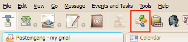
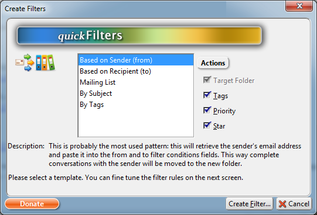
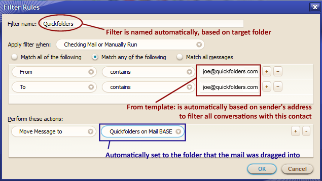
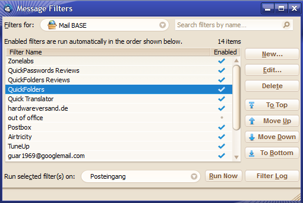
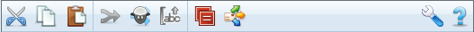

Version 2.2 Support creating filters based on Tag changes.
Version 2.1 Cloning filters. Group Filter template from multiple mails
Version 2.0 Added Toolbar and Postbox compatibility
quickFilters :: homepage
Thanks for installing quickFilters!
Here is a video that shows how to set up some filters. Anybody can do it, and if you
put in a few minutes to understand it you will be creating filters within seconds which are going
to tidy up your inbox automatically:
This extension makes it much easier to create new mail filters, by simply dragging emails into folders and let quickFilters do the "heavy lifting"
of filling in the sometimes complicated settings in the filter settings. Filters are usually used to move emails to other folders, automatically, so it makes
sense to show Thunderbird "what to do" by dragging one typical email manually, rather than filling in all the complicated details.
How to use quickFilters
With this, it is very easy to create new filters very quickly.
It will prefill the destination folder and other relevant fields after you have dragged the email into a different folder in the tree.
Click on the quickFilters button on the main toolbar

The button will change depicting a glowing wheel instead of the mail icon and there will be sliding notification:
Drag an email into a folder on the left hand folder tree. This will open the Filter Assistant screen.

select a template (e.g. "based on Sender") and click [Create Filter...] - in the example I have pulled an email into the QuickFolders folder.
See below for a detailed description.
Next, the Edit Filter dialog is displayed - as you can see it already tries to "guess" what you want the filter to do when it should be applied,
based on the email that you dragged to the folder:

Since in this case I chose "Based on Sender", it will pull all conversations from and to joe@quickFolders.com into the QuickFolders folder.
No need to select the folder (as it has been done automatically) or to enter any condition (this is based on the template that you have chosen).
Now tweak the filter as usual and click Ok to save it (and try it out in the Filter List)
You can also click Cancel to not create the filter
in the last step Thundebird's list of filters is shown.

You can repeat the process from step 2 to create more filters
When you're done, click the filter button again to disable "Filter Wizard" mode.
The Filter Assistant
On this screen, you select what type of information (conditions) will trigger the filter action,
and what kind of actions the filter will carry out. A condition is a 'fact' that applies to the
incoming email, such as 'the sender is fred', 'the mail is tagged as important',
'this message is more than a month old' etc. The action can be 'move message to freds folder',
'tag message as personal', 'set message low priority', 'mark message with a star'.
The templates offered here make this a much easier and quicker process and fill prefill the
new filter accordingly.
Filter Templates
This section describes the different patterns used to create filters based on the dragged email.
I will probably add more templates in future, if I get good requests from the users.
Simply head over to the bugs section to suggest new templates.
Based on Sender (from)
Probably the most used pattern: this will retrieve the sender's email address and paste it into the from and to filter conditions fields.
This way a whole conversation with the sender will be moved to the new folder.
Based on Recipient (to)
Similar to 'Based on Sender': use this when you move an email from yourself
to somebody else. This will retrieve the recpient's email address and paste it into
the from and to filter conditions fields. This way the complete conversation with
the contact will be moved to the new folder.
Mailing List
Similar to Based on Sender, but it doesn't fill the 'to' condition field.
Subscriptions - By Subject [Keyword]
This will look for special "bracketed" expressions, e.g. [amo-editors] or {Mozilla} and create a filter condition based on these; a lot of
mass email is set up using this pattern, so it is really easy to use.
By Tags
Uses the tags of the email and adds them as filter conditions.
Merging Filters
This is a special screen on the filter assistant which is shown if there are already filters that carry out the same action
as the one you want your new filter to do. It can also be invoked using the 'Merge Filters' button on the filter toolbar.
Note that you can only merge filters that have the same action (such as move to a certain folder or add a certain tag), quickFilters
makes sure that no other filters can be merged together.
Mail that's already moved
What if already have moved my Mails to another folder?
Chances are that sometimes forget switching on the filter assistant, or we have already moved a lot of mail around manually.
In this case the quickFilters version 1.6 now adds a context menu to the message list:
just right-click the mail you want to choose for your filter, and then click on QuickFilters: "Create Filter from Message...".
Alternatively, simply select the message and use the "Message" menu.
The Message Filters List
QuickFilters adds more functions to the filter list dialog - which becomes necessary after creating many filters was so easy.
The biggest new feature here is the addition of a Search box, which allows filtering the number of results.
I was able to submit this as a patch to Thunderbird itself and it is now part of the main product. With quickFilters,
search has many new features which can be selected with the search settings button:
Name - search the text within all filter names
Target Folder - filters that move or copy to a specific folder
Search Condition - all filter conditions that are text related (such as subject, body or sender)
Add Tag (label) - find filters that tag messages
Reply with Template - search for a template by searching subject lines

The toolbar has some useful functions that Thunderbird was missing:
Cut / copy / paste: these are designed to transfer filters from one account to another.
Select one ore more filters, then push cut or or copy, then select a new account (in the 'Filters for' drop down),
then paste the filters to the other account.
Merge filters: allows putting multiple filters into one, provided they do th same action. E.g. if two filters all
move mails to the 'Fred' folder, you can merge them together into one filter. The assistant will ask you to select
the "Target" filter, which is the one that gets the conditions from the other filters. Once you confirm the "Target Filter"
by clicking Ok, the merged filters will be deleted.
Clone filter: makes a copy of a filter in the account and opens the edit dialog so it can be modified.
Sort Alphabetically - implemented by popular demand. When using this feature you have to be aware that the list order
on screen also determines in which order the filters are executed. So if a filter on top moves a message the filter
below it cannot apply any more. Therefore, some caution is advised while using this feature.
Find Duplicates (Thunderbird only): This button is a powerful tool to detect filters that might do the same (and they might also be candidates for
the "Merge" process, as you might be able to combine them into one.
If duplicates are found they are shown in this drop-down:
Clicking an entry will automatically filter the results list to show the duplicate filters only:
The context menu adds a command "Remove duplicate..." for editing the part that makes this filter a duplicate.
Alternatively you can select both filters and try the "Merge" button.
Filter assistant mode toggle: once this is active, quickFilters will listen for manual mail movement and tagging emails.
If any of these actions occur, the assistant is started so that a filter can be created based on this action
The Support Site button opens this page.
The wrench button displays quickFilters global preferences.
Also you can now move the filter to the top of the bottom of the list. This is actually significant as the
order you see on screen is the same as the order in which the filters are executed. This also means, if a filter
on the top moves a message from the inbox then the filters below will not get a chance to execute on this message;
as the filters are only executed on messages in the inbox, they will simply be ignored. Therefore it is very important
that it remains easy to re-order the relative positions of the filters. This also works while the search box is active.
Preferences Dialog
Options Tab - sets global preference of quickFilters.
Exit Filter Assistant after a filter has been created. Default:on.
Automatically start Filter Assistant mode with application. If you want to full automate all mail movement
then you would activate this option and keep quickFilters paying attention to anything you do manually.
Default: off.
Display Toolbar in Filter Manager. I highly recommend leaving it on as it gives you extra options (Merge, Clone).
Default: on.
Listen for Tag changes. The Assistant will detect if a message is tagged manually.
Support quick move feature - the Assistant will be triggered when Postbox' "quick move" is used.
Naming Rules
quickFilters automatically generates filter names, so it is important to be consistent:
Disable two-way address conditions - by default the templates "Based on Sender" and "Based on Recipient"
will fill in two conditions, from XXX and to XXX. This is so whole conversations can be filtered
(including your personal replies) and moved to a folder. This is especially helpful when using
the "Copy Sent to Current" addon, and avoids messages being "orphaned" in the Sent Mail folder.
Add parent folder name. Default:on.
Add rule specific key word. Default:off.
Append to name of cloned filter - to avoid confusion when creating multiple versions of the same filter. Default: "(copy)"
Debug Mode: Use this for trouble shooting. With this option enabled quickFilters will print information in the Javascript Console.
The console can be shown via tools > error console. Additional log detail can be switched on via right-click on the checkbox.
QuickFolders
(Thunderbird / Postbox) takes the pain out of working with many mail folders; has currently 22,000 daily users and the top rated message reading extensions.
Entering European languages (which include diacritics (accented characters, diaeresis, umlauts, etc.), ligatures, the Euro sign, etc.)
into Mozilla applications using a non-native keyboards doesn't have to be a pain any more!